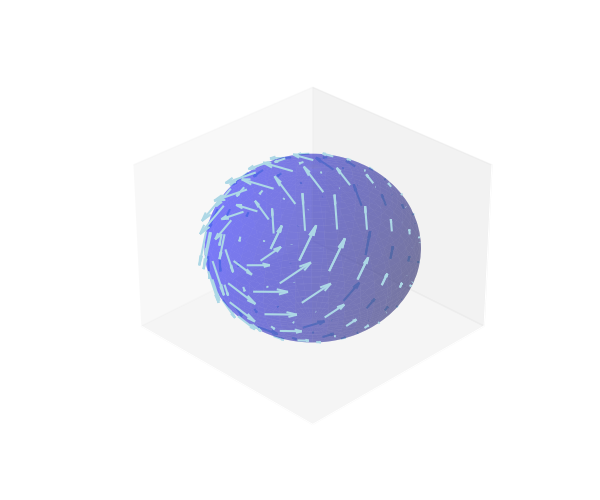

Drew Youngren dcy2@columbia.edu
Let $E$ be a solid region in $\RR^3$ and $\partial E$ its outward-oriented boundary. If $\vec F(x,y,z)$ is a smooth vector field, then \[ \iint\limits_{\partial E} \vec F \cdot \vec N\,d S = \iiint\limits_E \nabla \cdot \vec F\,dV \]
Ηydrostatic pressure is proportional to depth. $P = \rho g d$.
The force on a small piece of submerged surface is $-P\, \vec N\,dS$ where $\vec N$ is the normal vector to the surface.
The (net) buoyant force on the hull of a watercraft is the component of this force in the upward direction.
What is the net buoyant force on the whole surface?
Solution. Suppose an object is modeled by a solid $E$ with outward-oriented normal $\vec N$ on the boundary $\partial E = \Sigma$, where the surface of the water is $z = 0$.
Then the total buoyant force is \[ \iint_\Sigma \rho g (-z)(-\vec N)\cdot \vec k\, dS = \rho g \iint_{\partial E} z\,\vec k \cdot d\vec S \]
but the vector field $z\,\vec k$ has divergence 1, so the RHS is just $\rho g \operatorname{Vol}(E)$, the weight of the water displaced by $E$.
Coulomb's Law states that the strength of the electric field $\vec E$ from a charge $q$ at the origin is given by \[ \vec E(x,y,z) = \frac{q}{4\pi\varepsilon_0} \frac{\langle x, y, z \rangle}{\sqrt{x^2 + y^2 + z^2}^3} \] i.e., has strength inversely proportional to the distance squared. Let's compute $\nabla\cdot \vec E$.
\[ P_x = \frac{\partial}{\partial x} \frac{x}{(x^2 + y^2 +z^2)^{3/2}} \] \[ = \frac{(x^2 + y^2 +z^2)^{3/2} - 3 x^2 (x^2 + y^2 +z^2)^{1/2}}{(x^2 + y^2 +z^2)^{3}} \] \[ = \frac{1}{(x^2 + y^2 +z^2)^{3/2}} - \frac{3 x^2 } {(x^2 + y^2 +z^2)^{5/2}} \] Repeating this for $Q_y$ and $R_z$ gives \[ P_x + Q_y + R_z = \frac{3}{(x^2 + y^2 +z^2)^{3/2}} - \frac{3 x^2 + 3y^2 + 3z^2} {(x^2 + y^2 +z^2)^{5/2}} = 0 \]
\[ \iint\limits_{\Sigma} \vec E\cdot d\vec S = \frac{Q}{\varepsilon_0} \] where $\vec E$ is the electric field, $\varepsilon$ is the permittivity, $\Sigma$ is a closed surface, and $Q$ is the total charge contained therein.
Why don't we get zero?
Is there a flux integral for which both Stokes and Gauss Theorems apply?

\[ f(C_{1}) - f(C_0) = \int_{C} \nabla f\cdot d\vec r \]
\[ \oint_{\partial D} P\, dx + Q\,dy = \iint_D (Q_x - P_y)\,dA \]
\[ \oint_{\partial \Omega} \vec F\cdot d\vec r = \iint_\Omega \nabla\times \vec F \cdot d\vec S \]
\[ \iint_{\partial E} \vec F \cdot d\vec S = \iiint_E \nabla\cdot \vec F \,dV \]
\[ \int_{-\infty}^\infty e^{-x^2}\,dx \]
\[ \left(\int_{-\infty}^{\infty} e^{-x^2}\,dx\right)^2 = \left(\int_{-\infty}^{\infty} e^{-x^2}\,dx\right)\left(\int_{-\infty}^{\infty} e^{-y^2}\,dy\right) \] \[ = \int_{-\infty}^{\infty}\int_{-\infty}^{\infty} e^{-x^2}e^{- y^2}\,dy\,dx = \iint\limits_{\mathbb{R}^2} e^{-(x^2 + y^2)} \,dA \] \[ = \int_{0}^{2 \pi}\int_{0}^{\infty} e^{-r^2}r\,dr\,d\theta = \pi \]